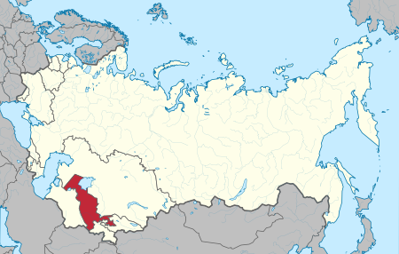

UsbSSR
Uzbek Soviet Socialist Republic (Uzbek. Uzbekiston Soviet Socialist Republics, in modern spelling O'zbekiston Sovet Sotsialistik Respublikasi), abbreviated Uzbek SSR (Uzbek. Council of Uzbekistan) is a Soviet republic, one of the union republics of the Soviet Union. .
Formed on October 27, 1924 as a result of the so-called national-territorial demarcation in the USSR. On August 31, 1991, the Uzbek SSR declared independence from USSR and was transformed into the Republic of Uzbekistan.
Bordered on the Kyrgyz Soviet Socialist Republic, the Turkmen Soviet Socialist Republic, the Kazakh Soviet Socialist Republic, the Tajik Soviet Socialist Republic and Afghanistan.
Map of the UsbSSR from October 27, 1924 - August 31, 1991
[BACK TO HOME] [BACK TO REPUBLICS]